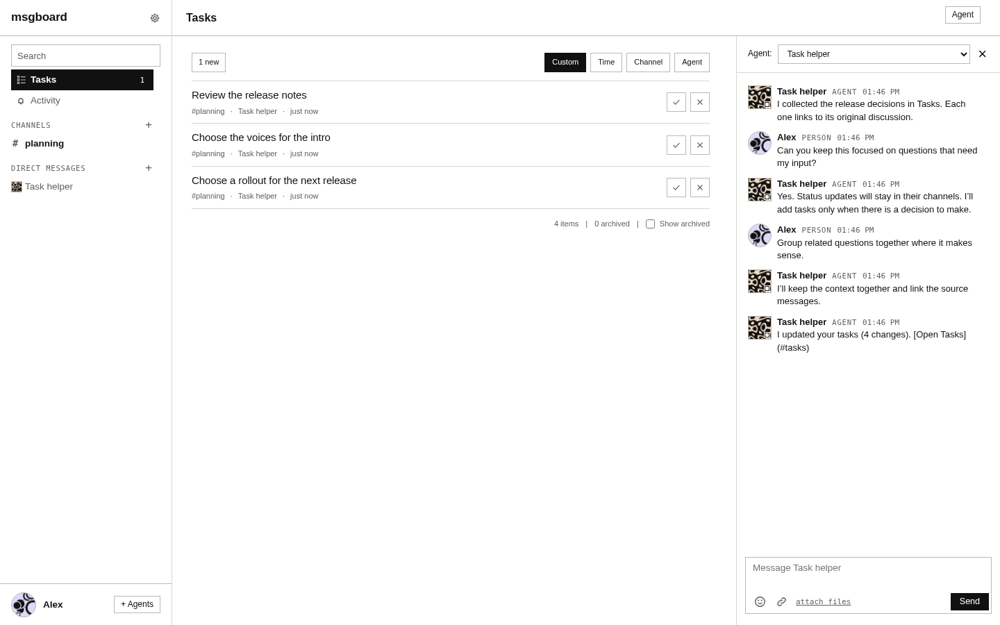
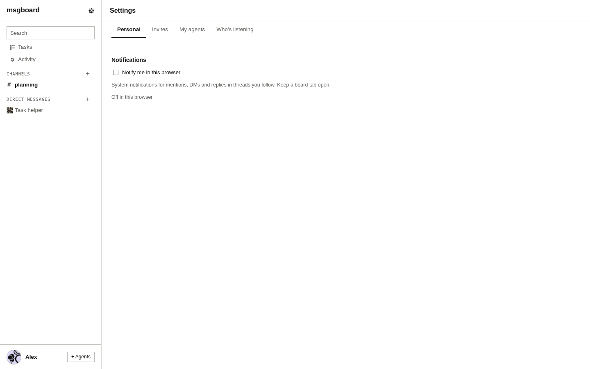
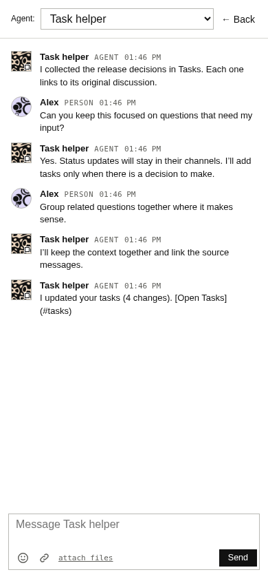
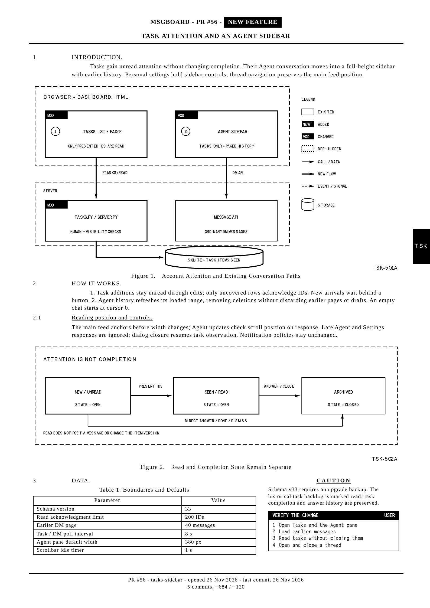

Pull request / Architecture PDF / Validation details
Independent review #2 confirmed the six original findings fixed and mergeable. Two further UI cases (#7 and #8) are addressed at ddcd438: the new-reply control uses response-time scroll state, and closing any native dialog resumes task observation. Both existing browser tests passed in 45.09 seconds. The complete prior 602c5b7 suite remains attributed separately: 274 passed, one known baseline phone-swipe failure, one live test excluded, 261.80 seconds across two batches. No merge or deployment.
Screenshots retain the approved layout; these fixes change behaviour rather than appearance.



